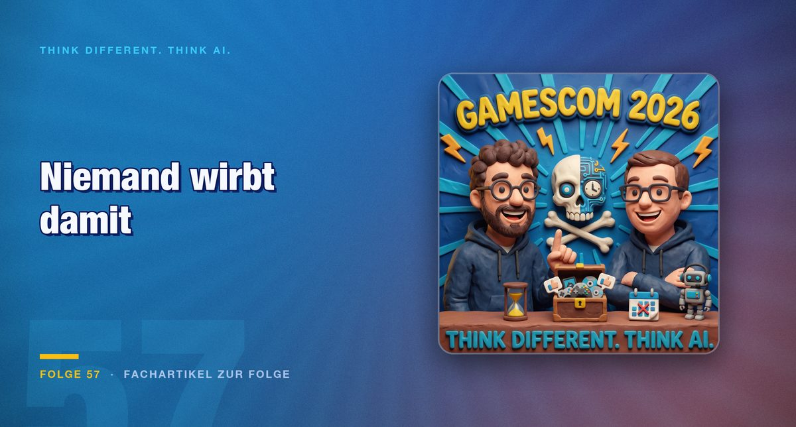

Folge 57 · Fachartikel zur Folge
Auf 1.700 Ständen wirbt niemand mit KI
Auf der größten Spielemesse der Welt taucht der Begriff, der sonst jede Produktseite schmückt, praktisch nicht auf. Der Grund liegt nicht in der Technik, sondern in den Bewertungen.

Wer über eine Messe wie diese läuft, findet Schilder für alles. PC, Handheld, Konsole, Cloud-Streaming, Ultrabreitbild. Ein Begriff fehlt, und er fehlt so vollständig, dass es auffällt: künstliche Intelligenz. In jeder anderen Branche ist das gerade das Wort, mit dem Aufmerksamkeit eingekauft wird. Hier wirbt damit niemand. Gleichzeitig erklärt der Branchenverband, die Technik sei seit Jahrzehnten im Einsatz. Beides gleichzeitig kann nicht stimmen, und der Widerspruch führt zu den interessanteren Fragen.
Der Blick, der alles erklärt
In der Indie-Halle lässt sich mit Entwicklern reden, das ist ihr Reiz. Auf die Frage nach KI in der Softwareentwicklung kam von einem Stand ein Blick, den man nur als Entsetzen beschreiben kann. Ein Blick auf das Spiel erklärte ihn: Es warb ausdrücklich mit handgemalten Grafiken.
Der Fehltritt war lehrreich. Wer viel Zeit in Handarbeit steckt, konkurriert inzwischen mit einer Flut schnell erzeugter Titel auf denselben Verkaufsplattformen. In dieser Menge überhaupt gehört zu werden, ist für ein kleines Studio schwer genug. Die Abgrenzung ist dann kein Kulturkampf, sondern Marketing aus der Not.
Dieselbe Logik gilt in die andere Richtung. Ein Studio hat öffentlich gemacht, KI in der Konzeptionsphase eingesetzt zu haben, und ist nach der Reaktion wieder davon abgerückt. Wo Entwickler offen damit umgehen, sammeln sich negative Bewertungen, unabhängig davon, ob das Spiel gut ist. Der Markt bestraft das Bekenntnis, nicht das Ergebnis.
Was der Verband meint und was gemeint sein könnte
Am Rande der Messe erklärte Felix Falk, Geschäftsführer des Branchenverbands game, KI sei nichts Neues, die Spieleentwicklung setze sie seit Jahrzehnten ein. Der Satz beruhigt und erklärt nichts. Jahrzehnte heißt mehr als zehn Jahre, und was in dieser Zeit unter dem Begriff lief, reicht von Wegfindung und Gegnerverhalten bis zu Werkzeugen, die mit heutigen Modellen nichts zu tun haben.
Genau hier liegt das eigentliche Problem der Debatte. Wenn Codevervollständigung schon zählt, arbeitet jedes Studio mit KI. Wenn erst generierte Spielwelten zählen, arbeitet fast keines damit. Ohne diese Unterscheidung reden Kritiker und Verband über verschiedene Dinge und werfen sich gegenseitig Unehrlichkeit vor. Zu einem großen kommenden Titel gab es die Meldung, es sei gar keine KI im Einsatz. Auch dieser Satz ist ohne Definition wertlos.
Die Zahlen widersprechen dem Bauchgefühl
An zwei Stellen wird die Ablehnung brüchig. Eine Untersuchung der University of Bristol hat 122 Spielsitzungen mit KI-generierten Figuren ausgewertet. 95 Prozent der Beteiligten empfanden die Interaktion als spaßiger. Wer es erlebt, ohne dass es angekündigt wurde, findet es also gut.
Die zweite Stelle betrifft die Altersverteilung. Man würde erwarten, dass die jüngere Generation offener ist. Tatsächlich sind es die 18- bis 24-Jährigen, bei denen die Zustimmung im niedrigen einstelligen Prozentbereich liegt, während sie ab 45 deutlich höher ausfällt. Für eine Branche, deren Zielgruppe jung ist, ist das die unangenehmere der beiden Zahlen.
Was Figuren mit Gedächtnis ändern würden
Der Reiz liegt nicht in besseren Grafiken, sondern im Verhalten. Heutige Spielwelten sind offen, solange man sich innerhalb des Drehbuchs bewegt. Man kann in einer dichten Großstadtkulisse alles Mögliche tun, aber man kann sich nicht hinter die Theke eines Imbisses stellen und selbst verkaufen. Auch ein starkes Spiel mit guter Geschichte hat zwischen den Höhepunkten Dialoge, die man wegklickt.
Das Bild, das in der Folge dafür steht, kommt von Jens Scharnetzki: Wer am Abend vorher einen erschlagenen Gegner vor der Tür des Wirts liegen lässt, wird am nächsten Morgen nicht mehr fröhlich begrüßt. Das ist die eigentliche Anwendung, Figuren, die auf das reagieren, was tatsächlich passiert ist. Die Kehrseite kam im Gespräch ebenso deutlich zur Sprache. Ein Begleiter, der immer verfügbar ist und einem nach dem Mund redet, ist kein neutrales Angebot, besonders nicht für Menschen, die viel Zeit in solchen Welten verbringen.
Dass sich solche Systeme nicht steuern lassen wie ein Skript, ist keine Vermutung. In Experimenten mit Agenten in offenen Welten haben sich Arbeitsteilung, Handel und sogar so etwas wie Religionen gebildet, ohne dass jemand das vorgesehen hatte. Und die Spielgeschichte kennt den Fall auch ohne KI: In der Frühzeit von World of Warcraft trug ein Spieler über sein Begleittier eine Seuche aus einem Endkampf in die Städte, wo sie Spieler und Figuren gleichermaßen tötete, bis die Betreiber den Zustand zurücksetzten.
Fazit
Die Frage, ob Spiele KI einsetzen sollten, ist praktisch entschieden. Sie tun es, nur eben leise. Offen bleibt, wo die Grenze zwischen Werkzeug und Inhalt verläuft, und diese Grenze zieht derzeit niemand, weder die Kritiker noch der Verband.
Für alle außerhalb der Branche bleibt eine Beobachtung, die übertragbar ist: Ein Bekenntnis zur Technik kostet gerade mehr, als das Ergebnis einbringt. Wer das für ein Gaming-Phänomen hält, sollte prüfen, wie viele Produkte im eigenen Umfeld einen Hinweis tragen, den niemand vermisst hätte.